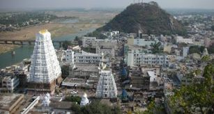
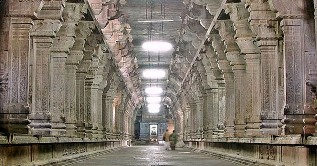
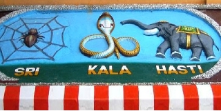

About Us
According to ancient Tamil sources Sri Kalahasti has been known as the ‘Kailas of the South’ for slightly more than two thousand years and the small river on whose banks it sits, the ‘Ganges of the South.’ Kailas is perhaps India’s most revered spiritual symbol. It is the abode of Shiva, from whose head, according to legend, the Ganges is said to flow. Shiva, ‘that which is auspicious at all places, times and in all circumstances’ is a symbol of the Self and the Ganges flowing from his head represents the spiritualized or awakened mind. A mind sourced in Spirit is a river of immeasurable power and life-giving goodness. The claim that Kalahasti is the ‘Kailas of the South’ simply means that the small hill near the temple is to be taken as the spiritual equivalent of the Himalayan Kailas. Likewise, the small river flowing in a northerly direction beside the temple is to be taken as the mighty Ganges.
Even the cardinal directions have assumed symbolic significance in Pauranic culture. Obviously context should be taken into account when divining the meaning of a symbol, but north, for example, is said to be the abode of the Self because from the immortal ‘northern’ position the Self looks out on the ‘southern’ world of time and death. The idiom to “head south’ means to go downhill, to decay. The God Dakshinamurthy whose name means ‘the one facing south’ and whose idol (murthy) is installed in the Kalahasti Temple, sits in the North and faces south. East often represents the dawning of wisdom, the sun being another common Self symbol. The symbolic use of direction culminates in the idea of building temples at the point on a river where its meandering points it back to its source. The holiest city in India, Benaras, is built on a stretch of the Ganges that flows northward, the idea being that when the mind turns back toward its source, the God/Self, it realizes its innate divinity. So, the small river on whose banks the Kalahasthi temple is situated is meant to remind us of the Ganges and the wealth of spiritual associations it conjures.
The Vedas posit four ends for which human beings strive in their search for happiness: pleasure (kama), security or wealth (artha), duty (dharma) and freedom (moksha). In the temple at Kalahasti these four universal motivations, which may take any worldly form, are, according to temple literature, converted into spiritual impulses. They are represented by four deities facing in the four cardinal directions. Shiva in the form of Dakshinamoorthy represents desire, in this case the desire for liberation, although he more commonly is said to represent the feeling of wealth (dakshina) that comes when you know who you really are. At Kalahasti the Goddess Gnanaprasoonamba (the giver of knowledge or the mother of all knowledge) represents the ‘wealth’ i.e. freedom from limitation conferred by Self knowledge. The deity Kalahastishwara (the lord of Kalahasti) faces west and symbolizes liberation. Liberation, the death of ego upon the rediscovery of the Self, is the final stage of life just as setting is the sun’s last act before it disappears over the horizon.
The Tamil Cholas and the Vijayanagara Rulers have made several endowments to this temple. Adi Sankara is said to have visited this temple and offered worship here. There are Chola inscriptions in this temple which date back to the 10th century CE. The Telugu poem 'Sri Kalahasti Satakam' explains the traditions associated with this temple.Muthuswamy Deekshitar, one of the foremost composers in the Karnatic Music Tradition has sung the glory of this temple in his kriti 'Sree Kaalahasteesa'.
GAALI GOPURAM:
Sri Krishnadevaraya built a huge gopuram in 1516, a few feet away from the entrance to the temple. The entrance to the temple is crowned with a smaller tower. There is an underground Ganapati shrine in the outer prakaram, while in the innermost prakaram are the shrines of Shiva and Parvati. This ancient gopuram over the main gate, which is 36.5 meters (120 feet) high and the entire temple is carved

The vast west facing Kalahastiswara temple is built adjoining a hill, and on the banks of the river Swarnamukhi. At some points, the hill serves as the wall of the temple. The temple prakarams follow the contour of the adjoining hill and hence the temple plan is rather irregular. North of the temple is the Durgambika hill, south is the Kannappar hill and east is the Kumaraswamy hill.
ARCHITECTURE:
The present structure of the temple is a foundation of the Cholas of the 10th century, as testified by inscriptions; improvements and additions were made during the subsequent years of the Chola rulers of Tamilnadu and the Vijayanagar emperors.


SriKalahasti got its name because in days of yore a spider (sri), serpent (kala) and elephant (hasti) elephant worshipped Shiva with great devotion. A spider lived in the inner sanctum and worshipped the Lord by weaving elaborate temples and images of Shiva. One day a breeze came up and caused the altar fire to destroy the spider’s offerings. It became angry and was about to gulp down the flame, (realize the Self) endangering its (ego’s) life. Appreciative of its devotion, Shiva appeared and granted the spider a boon. The spider requested moksha, release from the cycle of births and deaths. Accordingly it became one with Shiva, the Self.
A cobra worshipped Lord Shiva by offering rare gems, pearls and rubies that it brought from Nagaland, a mythical place where Nagas (serpents) dwell. Serpents are one of India’s most visible symbols of the spiritual power of the Self. The spiritual power of the Self, called Kundalini, the latent electricity of Consciousness, is hidden in the dark recesses of the unconscious like a snake hidden deep within the earth. After the snake had worshipped, an elephant, fresh from its purifying bath in the nearby river, came to worship. In preparation it sprayed the altar with water from its trunk, scattering the gems. It then proceeded to decorate the altar with leaves from a holy tree. When the cobra returned it was angered to see its offerings disrespected and replaced by mere leaves. So it replaced the leaves with gems. This charade repeated itself every day until the cobra became fed up and decided to punish whomever was destroying its offerings. When the elephant returned to worship with its leaves the cobra slithered up its trunk and injected its venom. In agony the elephant dashed its head on the stone altar in an attempt to kill the snake. The snake fell out of the trunk and died from its wounds and the elephant succumbed to the poison. Understanding that both had sacrificed their lives for the sake of their love of the Lord, Shiva resurrected them, gave them liberation and took them into his own body. At the foot of the linga one can see a spider, two elephant tusks and a five-headed (the five elements) serpent to remind the devotee of these acts of supreme devotion.